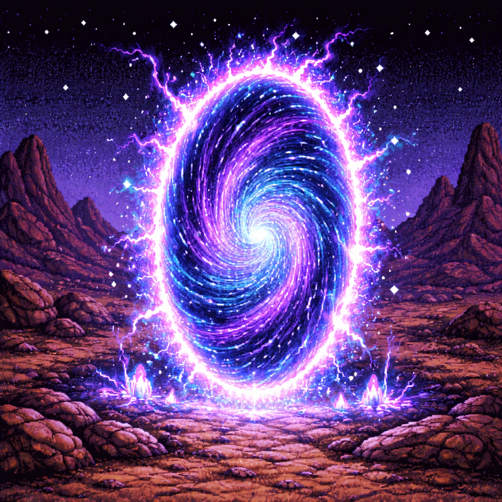

The Ashashuaian Dimensional Portal.....

This depiction was approximated using primitive Earth-based imaging technology
The ancient Ashashuaian portal has been a mystery long before any beings on Ashashua even existed. Many theories have been gathered throughout time from this great phenomenon. There have been numerous reports of various items from far off lands being teleported from these portal to the surface. The ancients believed that other planets and other races were trying to communicate with Ashashua by sending strange and seemingly useless items to the planet of Ashashua. Certain foods , creatures, artifacts and even in some cases people, yes, people have been known to vanish, or show up out of no-where on the face or off the face of the planet Ashashua. However there are some insane logical minded foolish people on Ashashua who think this theory is just a myth. Until these people change the thinking patterns of their unstable minds, they will be nothing more than considered to be outcasts.